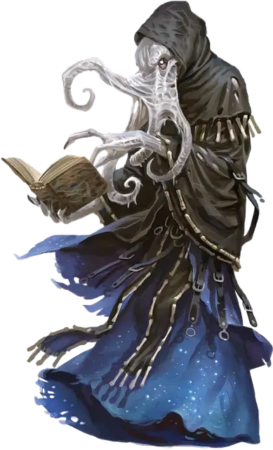

Алхун
Alhoon
Средняя Нежить (Свежеватель разума, Волшебник), любое злое мировоззрение

Класс Доспеха 15 (природный доспех)
Хиты 150 (20к8 + 60)
Скорость 30 футов, летая 15 футов (парит)
| мод | спас | ||
|---|---|---|---|
| СИЛ | 11 | +0 | +0 |
| ЛОВ | 12 | +1 | +1 |
| ТЕЛ | 16 | +3 | +7 |
| мод | спас | ||
|---|---|---|---|
| ИНТ | 19 | +4 | +8 |
| МДР | 17 | +3 | +7 |
| ХАР | 17 | +3 | +7 |
Навыки Восприятие +7, История +8, Магия +8, Обман +7, Проницательность +7, Скрытность +5
Сопротивление урону некротическая энергия, холод, электричество
Иммунитет к урону яд
Иммунитет к состояниям отравление, паралич, очарование, испуг, истощение
Чувства истинное зрение 120 футов, пассивное Восприятие 17
Языки Глубинная речь, Подземный, Телепатия 120 фт.
Опасность 10 (5900 опыта)
Бонус мастерства +4
Среда обитания Подземье
Особенности
Сопротивление магии. Алхун имеет преимущество на спасброски против заклинаний и других магических эффектов.
Сопротивление изгнанию. Алхун имеет преимущество на спасброски против любых эффектов, которые изгоняют нежить.
Действия
Мультиатака. Алхун совершает два Хладных объятия или Магических снаряда.
Хладные объятия. Рукопашная атака заклинанием: +8 к попаданию, досягаемость 5 футов, одна цель. Попадание: 14 (4к6) урона холодом и алхун восстанавливает себе 14 хитов.
Магический снаряд. Дальнобойная атака заклинанием: +8 к попаданию, дистанция 120 футов, одна цель. Попадание: 28 (8к6) урона силовым полем.
Взрыв разума (Перезарядка 5–6). Алхун магически излучает психическую энергию в конусе в 60 футов. Каждое существо в этой области должно преуспеть в спасброске Интеллекта Сл 16 или получить 22 (4к8+4) урона психической энергией и стать ошеломленой на 1 минуту. Существо может повторять этот спасбросок в конце каждого своего хода, заканчивая эффект на себе при успехе.
Использование заклинаний. Алхун накладывает одно из следующих заклинаний, используя Интеллект в качестве базовой характеристики и без использования материальных компонентов (Сл спасброска от заклинаний 16):
• Неограниченно: пляшущие огоньки [dancing lights], обнаружение магии [detect magic], обнаружение мыслей [detect thoughts], маскировка [disguise self], волшебная рука [mage hand], фокусы [prestidigitation];
• 1/день каждое: подчинение чудовища [dominate monster], сфера неуязвимости [globe of invulnerability], невидимость [invisibility], изменение памяти [modify memory], уход в иной мир [plane shift] (только на себя), силовая стена [wall of force].
Реакции
Отмена заклинания (3/день). Алхун нацеливается на одно существо, которое он может видеть в пределах 60 футов и которое накладывает заклинание. Если заклинание 3-го уровня или ниже, то заклинание не срабатывает, но любые ячейки заклинаний или заряды не расходуются впустую.
Описание
Существует множество причин для отказа от становления личом. Временные решения парадоксальны. Возьмите алхунов. Им необходимы души, для того чтобы не иссохнуть. Я не вижу в этом привлекательности".
— Морденкайнен
Свежевателей разума, которые исследуют тайную магию, изгоняют как отщепенцев, и им отказано в вечном соединении со старшим мозгом. Путь становления подобием лича является альтернативным способом избежать неминуемой смерти, но путь этот долог и полон трудностей. Алхуны – это свежеватели разума, которые нашли короткий путь для достижения личеподобного состояния.
Старший мозг запрещает свежевателям разума исследовать мощь магии за исключением псионики, но это не табу которое приходится часто насаждать силой. Иллитиды не подчиняются никому кроме представителей своего вида, так что поклоняться богам или потустороннему покровителю не в их природе. Однако, волшебство остается искушением. На страницах книги заклинаний иллитид видит способ получения власти.
В записях волшебника, написавшего эту книгу, иллитид распознает работу автора с высоким интеллектом. Большинство свежевателей разума, которые находят книгу заклинаний, реагируют отвращением или безразличием, но для некоторых из них книга заклинаний является путем к новому способу мышления.
Некоторое время, изучение таких запретных текстов может проводиться в тайне от других иллитидов и даже от старшего мозга. Но в конце концов исследующий магию свежеватель разума, должен покинуть колонию ради собственной безопасности.
Ощущение вкуса свободы от колонии действует на всех по разному. Некоторые начинают дорожить уединением, а другие хотят общаться с похожими умами, а иные ищут способ завладеть властью над колонией и вознестись на лидерскую позицию, которую обычно занимает старший мозг. Как бы то ни было, все эти заклинатели сталкиваются с одним и тем же непреклонным фактом: когда они погибнут, то не присоединятся к множеству разумов в старшем мозге. Разумы изгои никогда не признаются как часть коллектива. Для них смерть означает забвение.
Становление подобием лича предлагает спасение и перспективу бесконечного стремления к знаниям. Свежеватель разума ест мозги людей при жизни, поэтому не испытывает никаких угрызений совести, скармливая души филактерию. Тем не менее, изучение секрета достижения состояние подобного личу требует, чтобы исследователь магии был на вершине могущества, что для многих свежевателей разума очень сложно, если вообще достижимо.
Столкнувшись с осознанием этой ужасной реальности, группа из девяти изгоев свежевателей разума использовала свою тайную магию и псионику, чтобы создать новую истину. Эти девятеро именовались Алхун и после того все, кто идет по их стопам, называют себя тем же именем.
Объединенная нежить
Что бы стать алхунами, арканисты свежеватели разума должны работать сообща для создания амулета поимки разума [periapt of mind trapping], контейнера размером в кулак, сделанного из серебра, изумруда и аметиста. Этот процесс требует по крайней мере трёх арканистов свежевателей разума и жертвы такого же числа душ живых жертв для проведения трехдневного ритуала из комбинации заклинаний и псионики. По его завершении свежеватели разума по своей воле становятся нежитью, превращаясь в алхунов.
По началу алхуна трудно отличить от обычного свежевателя разума. Самое очевидное отличие – это отсутствие всегда присутствующего на свежевателях разума покрытия слизью. Без этой защиты кожа алхуна становится сухой и потрескавшейся. Его глаза могут показаться утопленными и ссохшимися. Оба этих признака легко не заметить, если вы никогда не видели свежевателя разума. Однако, через небольшой промежуток времени, плоть алхуна высыхает и глазницы начинают блестеть холодным светом как и у других личей.
В отличие от истинного лича, амулет поимки разума не возвращает алхуна к нежизни, если его уничтожат. Вместо этого разум алхуна переносится в амулет, где он и остается в общности с остальными запертыми разумами алхунов, а также с пожертвованными душами.
Нежизнь, присваемая амулетом поимки разума, длится столько, сколько длится жизнь выбранной живой жертвы. Так что алхун, который привел 200–летнего эльфа на жертву скорее всего просуществует гораздо дольше, чем тот, кто пожертвовал 35–летнего человека. Алхуны могут продлить свое существование повторив ритуал с новыми жертвами, перезапустив для себя часы.
Уничтожение амулета поимки разума отправляет заключенные в нем души в забвение, и поэтому алхуны часто работают вместе для создания изощренной защиты амулета и своего предпочитаемого ритуального места. Иногда одному алхуну доверяют амулет поимки разума, но это опасное предприятие. Любой, кто держит амулет поимки разума, получает преимущество на броски атаки, спасброски и проверки против алхунов, связанных с его созданием, а те алхуны, в свою очередь, получают помеху на броски атаки, спасброски и проверки против держателя. Кроме того, держатель амулета может телепатически общаться с любой пожертвованной душой внутри, а алхуны внутри амулета могут телепатически общаться с держателем. Существо, держащее амулет, не может избежать разговоров с алхунами, но может заставить молчать пойманные души.